Approfondimenti · 15 novembre 2026
Attacchi informatici: quanto è facile bloccare un Paese e cosa fare a casa
Frigoriferi manomessi a distanza, falsi allarmi bomba via mail, dati rubati: cosa sta succedendo in Europa, perché è così facile e le cose semplici da fare a casa da domani.

Telefonia · 8 novembre 2026
WhatsApp cambia i gruppi: le 4 novità e come usarle
Messaggi fissati per sempre, cronologia da inviare a chi entra dopo, lo stato visibile solo al gruppo e il filtro per le menzioni: cosa cambia e come usare le novità…

Approfondimenti · 1 novembre 2026
La nuova era dell'IA: quella che calcola (Analitico-Predittiva) e quella che crea (Generativa). Realtà o finzione?
L'intelligenza artificiale sta cambiando medicina, meteo, lavoro e vita di tutti i giorni. Due famiglie da conoscere: l'IA che calcola e prevede e l'IA che crea. E una domanda sempre più importante: realtà o finzione?

Telefonia · 25 ottobre 2026
Android ti avvisa delle truffe: le nuove protezioni di Google
Google Messaggi controlla i link sospetti, gli avvisi truffa arrivano anche nelle chat, lo schermo condiviso nasconde password e carte. Cosa arriva su Android, su quali telefoni e come attivare oggi quello che c'è già…
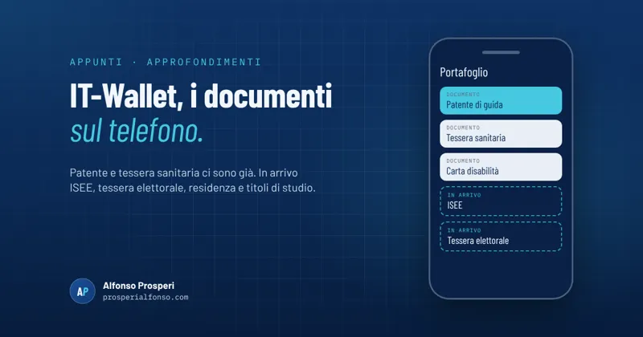
Approfondimenti · 15 ottobre 2026
IT-Wallet: i documenti sull'app IO e i nuovi in arrivo
Patente, tessera sanitaria e carta disabilità sono già sull'app IO. Entro fine 2026 arrivano ISEE, tessera elettorale, residenza e titoli di studio: come attivare il Portafoglio…

Consigli · 14 giugno 2023
VirusTotal: come controllare un file o un link sospetto prima di aprirlo
Controllare un allegato o un link sospetto con decine di antivirus insieme, in pochi secondi.
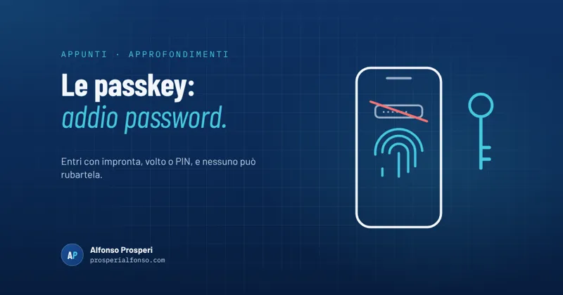
Approfondimenti · 04 maggio 2023
Passkey: cosa sono e come accedere senza password a Google e agli altri servizi
Accedere con impronta o volto al posto della password: cosa sono le passkey e come attivarle.
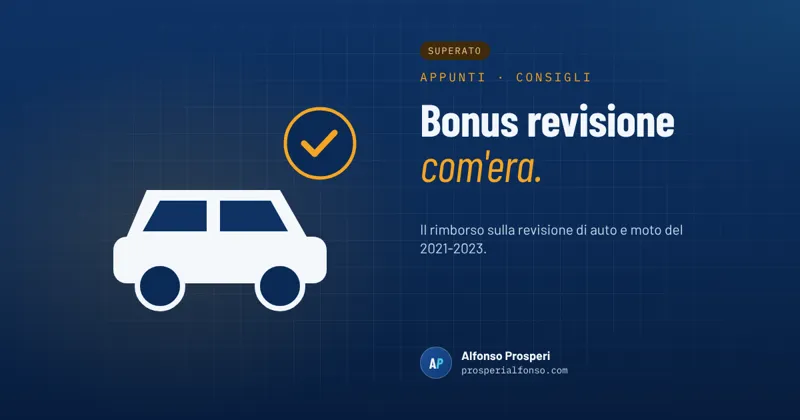
Superato
Consigli · 13 luglio 2022
Bonus veicoli sicuri: il rimborso di 9,95 euro sulla revisione (2021-2023)
Il rimborso di 9,95 euro sulla revisione previsto dal 2021 al 2023.

Consigli · 06 aprile 2022
Attestazione ISEE: come scaricarla online dal sito INPS (anche se l'ha fatta il CAF)
Come scaricare l'attestazione dal sito INPS, la scadenza del 31 dicembre e l'ISEE precompilato.

Consigli · 03 febbraio 2022
CUP Abruzzo online: come prenotare visite ed esami e cambiare medico da casa
Prenotare visite ed esami in Abruzzo, cambiare medico e gestire le deleghe dal portale regionale.
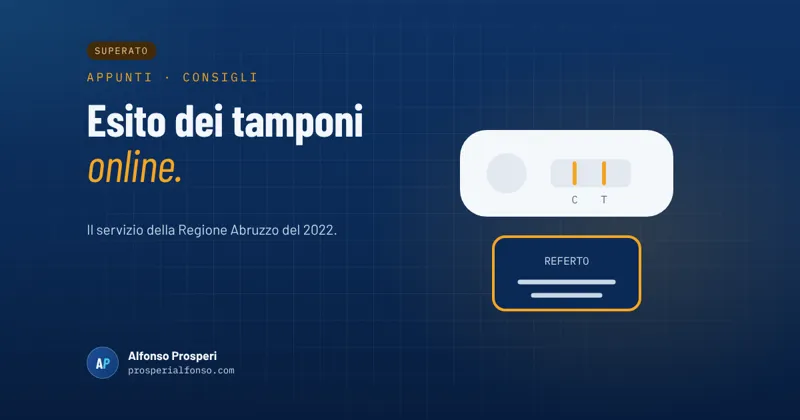
Superato
Consigli · 13 gennaio 2022
Esito dei tamponi online in Abruzzo (servizio del 2022, superato)
Il servizio regionale del 2022 per vedere online gli esiti dei tamponi Covid.
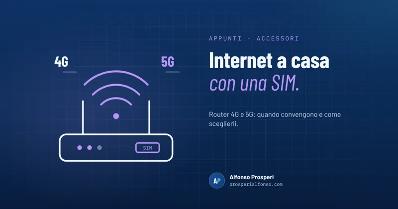
Accessori · 03 gennaio 2022
Router 4G e 5G per la casa: cosa sono, quando convengono e come sceglierli
Internet a casa con una SIM: quando conviene, i limiti e come scegliere router e offerta.
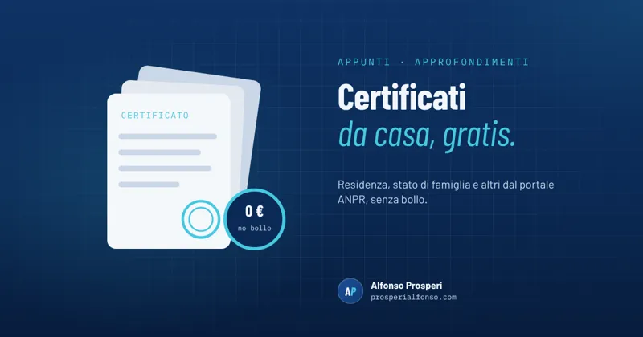
Approfondimenti · 09 novembre 2021
Certificati anagrafici online e gratis su ANPR: quali sono e come scaricarli
Residenza, stato di famiglia e altri certificati gratis dal portale ANPR, con SPID o CIE.
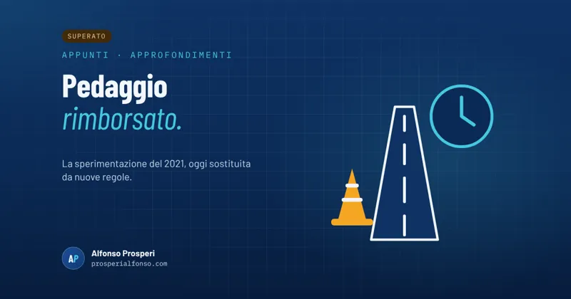
Superato
Approfondimenti · 22 ottobre 2021
Cashback autostrade: il rimborso dei pedaggi per i cantieri (sperimentazione 2021)
La sperimentazione 2021 sul rimborso del pedaggio per ritardi da cantiere.
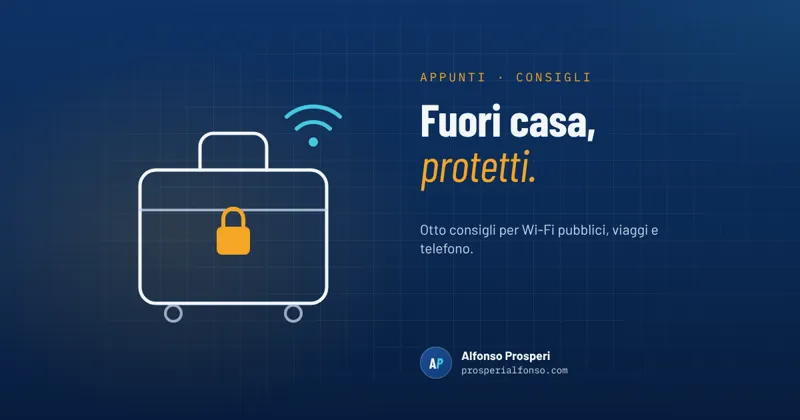
Consigli · 16 agosto 2021
Sicurezza informatica fuori casa: 8 consigli per vacanze e Wi-Fi pubblici
Wi-Fi pubblici, telefono perso, false offerte di viaggio: otto consigli per stare tranquilli fuori casa.
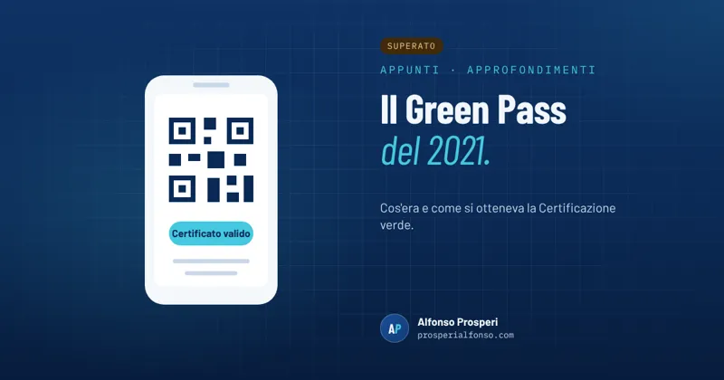
Superato
Approfondimenti · 17 giugno 2021
Green Pass: cos'era e come si otteneva (2021, superato)
Cos'era la Certificazione verde Covid-19 e come si otteneva nel 2021.
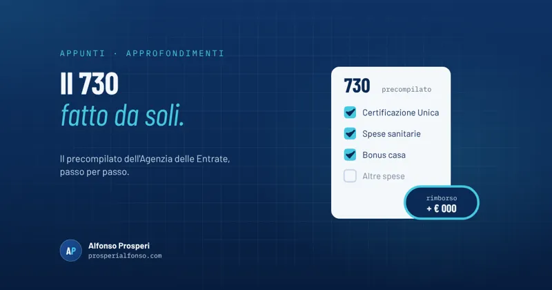
Approfondimenti · 01 giugno 2021
730 precompilato online: come farlo da soli, passo per passo
Date, cosa serve, cosa controllare e come inviare il 730 precompilato senza CAF.
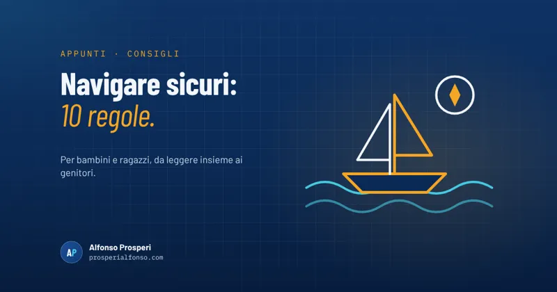
Consigli · 06 maggio 2021
Navigare sicuri: 10 regole per bambini e ragazzi (e per i genitori)
Dieci regole semplici per far navigare in sicurezza bambini e ragazzi.
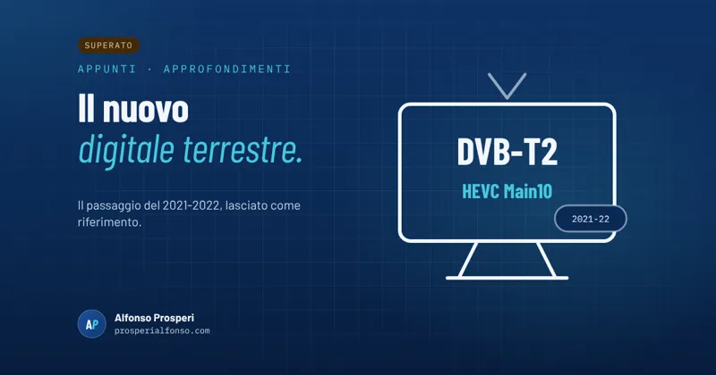
Superato
Approfondimenti · 22 febbraio 2021
Il nuovo digitale terrestre DVB-T2: il passaggio del 2021-2022
Il passaggio al digitale terrestre DVB-T2 del 2021-2022, lasciato come riferimento.
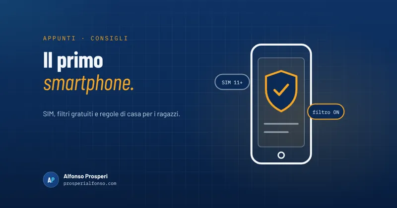
Consigli · 11 febbraio 2021
Primo smartphone ai figli: SIM, parental control gratuito e come scegliere l'offerta
Il filtro gratuito sulle SIM dei minori, il limite del Wi-Fi e come scegliere l'offerta.
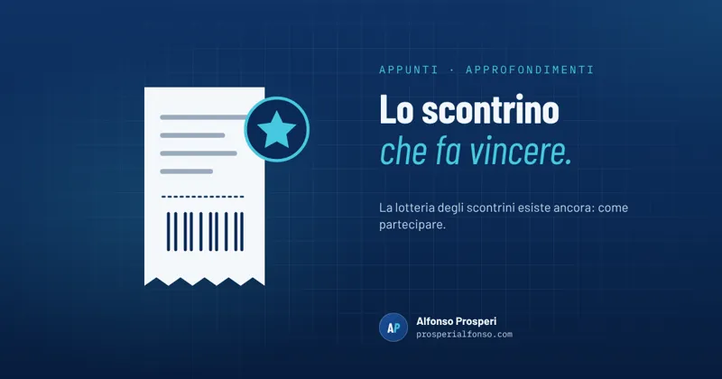
Approfondimenti · 01 febbraio 2021
Lotteria degli scontrini: come partecipare, cosa si vince e chi può giocare
Il codice lotteria, gli acquisti che valgono e come sapere se hai vinto.
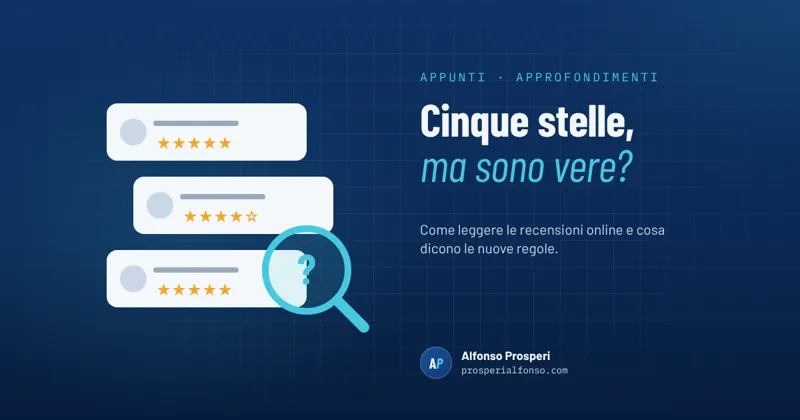
Approfondimenti · 26 gennaio 2021
Recensioni online: come riconoscere quelle false e cosa dicono le nuove regole
Come riconoscere quelle false, cosa prevedono le nuove regole e perché contano per le attività.
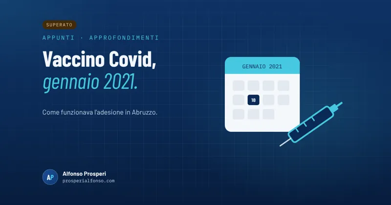
Superato
Approfondimenti · 18 gennaio 2021
Prenotazione vaccino Covid-19 in Abruzzo (gennaio 2021, superato)
Come funzionava l'adesione alla vaccinazione anti Covid-19 in Abruzzo a gennaio 2021.
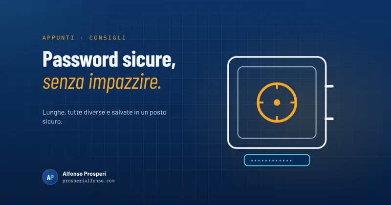
Consigli · 05 gennaio 2021
Password sicure: come crearle, dove salvarle e quando passare alle passkey
Lunghe, diverse per ogni sito e salvate in un gestore: le regole semplici per password sicure.
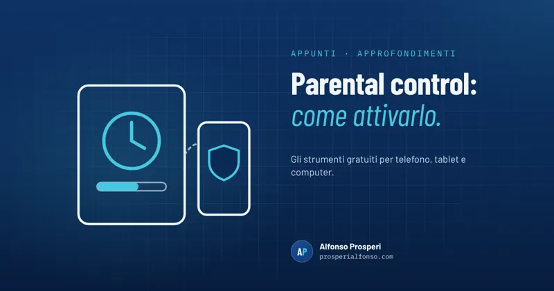
Approfondimenti · 26 dicembre 2020
Parental control: come proteggere i figli su smartphone, tablet e PC
Family Link, Tempo di utilizzo, Family Safety e il filtro gratuito degli operatori: come attivarli.
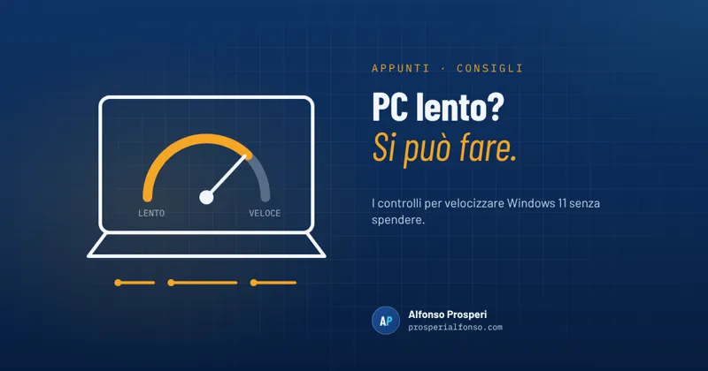
Consigli · 10 dicembre 2020
PC lento? Come velocizzare Windows 11 senza spendere (e cosa fare con Windows 10)
I controlli per velocizzare Windows 11 senza spendere, e quando conviene cambiare hardware.
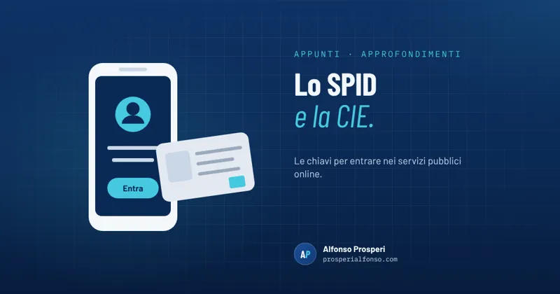
Approfondimenti · 04 dicembre 2020
SPID: cos'è, quanto costa oggi e come richiederlo (e l'alternativa CIE)
Cos'è lo SPID, quanto costa oggi, come richiederlo e la CIE come alternativa gratuita.
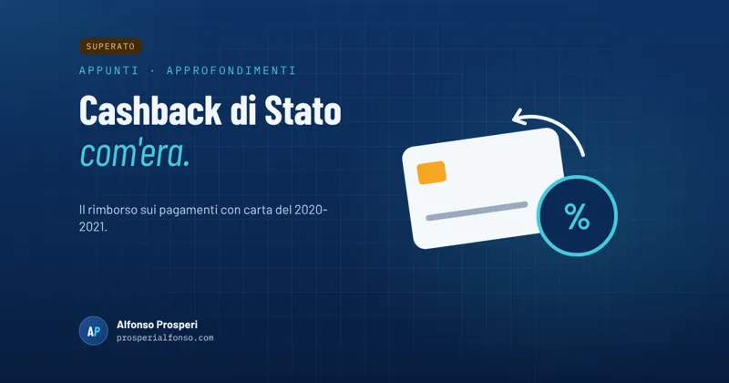
Superato
Approfondimenti · 04 dicembre 2020
Cashback di Stato e piano Cashless Italia (2020)
Come funzionava il rimborso sui pagamenti elettronici del 2020-2021.
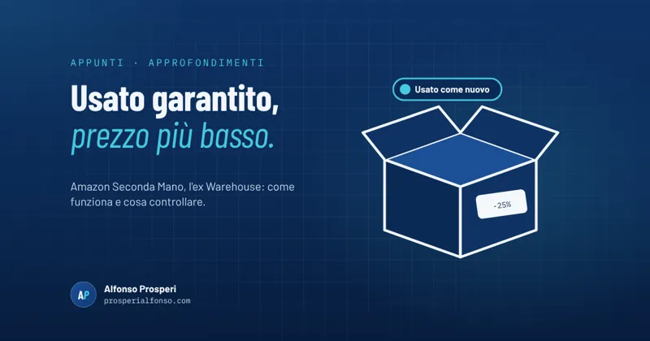
Approfondimenti · 02 dicembre 2020
Amazon Seconda Mano (ex Warehouse): come comprare usato garantito e risparmiare
Cosa vende, le condizioni dell'usato, resi, garanzia e consigli per trovare i veri affari.
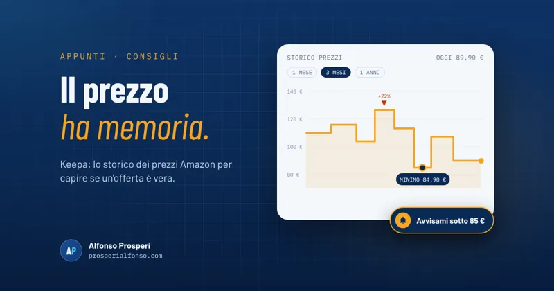
Consigli · 27 novembre 2020
Keepa: lo storico dei prezzi Amazon per capire se un'offerta è vera
Keepa mostra come è cambiato il prezzo di un prodotto su Amazon e ti avvisa quando scende: cosa fa, come si usa da computer e telefono e come leggere il grafico in pochi secondi.
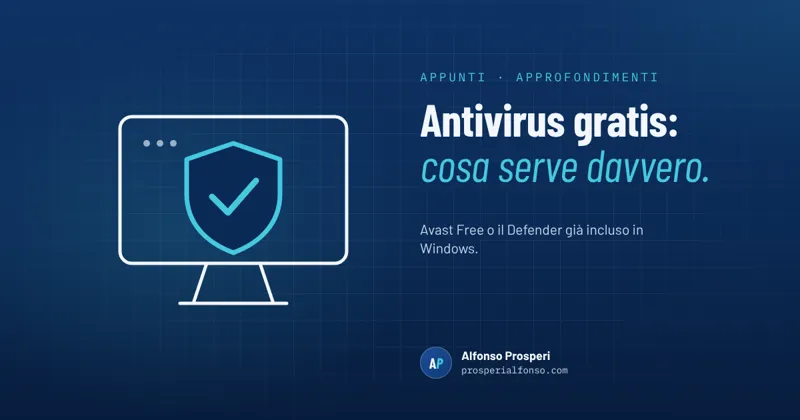
Approfondimenti · 25 novembre 2020
Antivirus gratuito: Avast Free serve ancora o basta quello di Windows?
Avast Free o Microsoft Defender già incluso in Windows: cosa scegliere oggi.
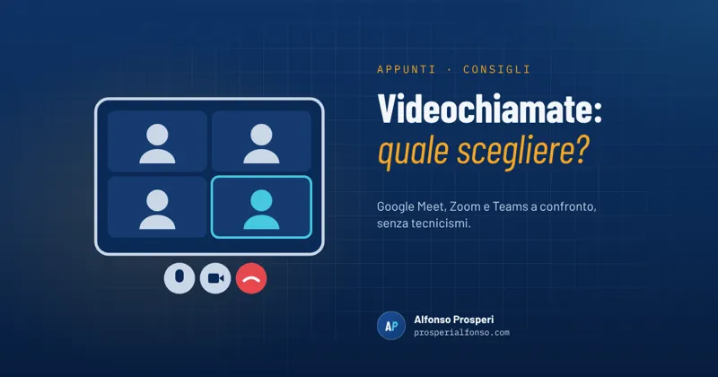
Consigli · 23 novembre 2020
Google Meet, Zoom o Microsoft Teams: quale scegliere per le videochiamate
Versioni gratuite, limiti e facilità d'uso: quale piattaforma scegliere per le videochiamate.
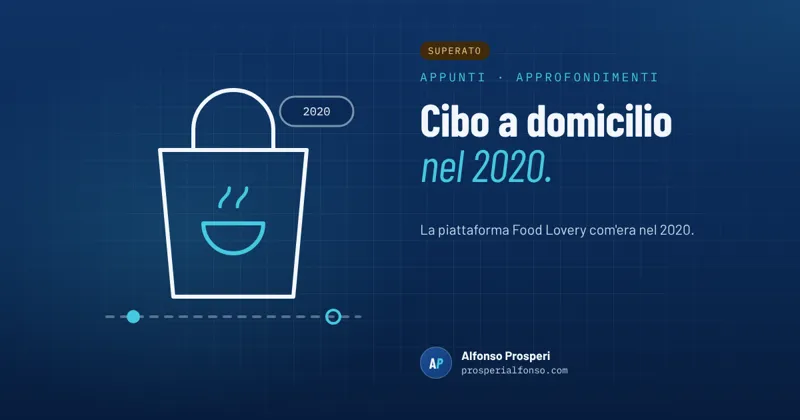
Superato
Approfondimenti · 16 novembre 2020
Food Lovery: il servizio di consegne a domicilio (2020)
La piattaforma di cibo a domicilio Food Lovery com'era nel 2020, lasciata come riferimento.
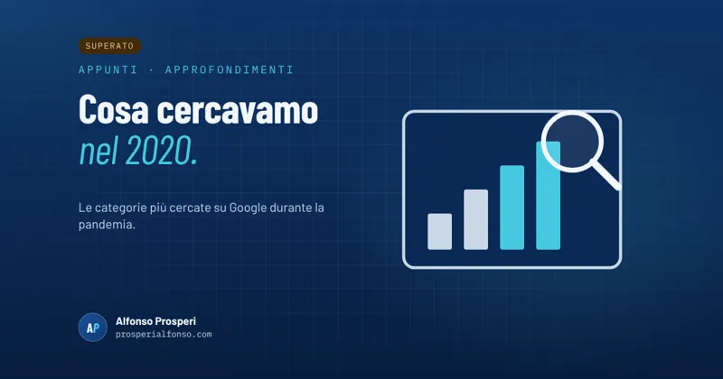
Superato
Approfondimenti · 13 novembre 2020
Google: le categorie più cercate nel 2020
Lo strumento di Google sulle categorie in crescita nel 2020. Oggi c'è Google Trends.
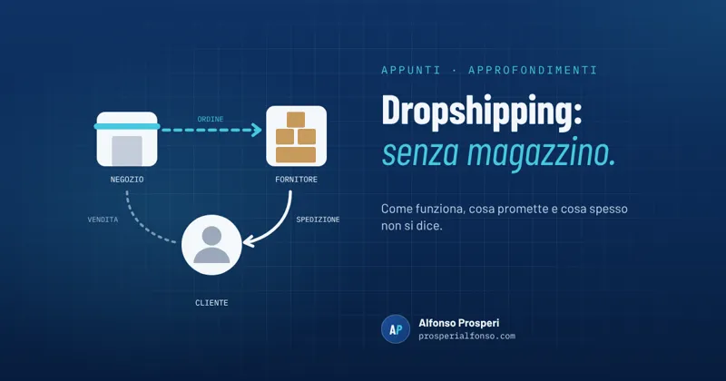
Approfondimenti · 11 novembre 2020
Dropshipping: come funziona, vantaggi, rischi e regole in Italia
Vendere senza magazzino: come funziona, i rischi reali e le regole da rispettare.
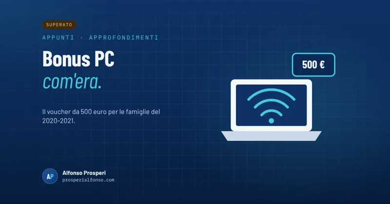
Superato
Approfondimenti · 09 novembre 2020
Bonus PC, tablet e internet veloce: il voucher del 2020
Il voucher da 500 euro per connessione e computer del 2020-2021.
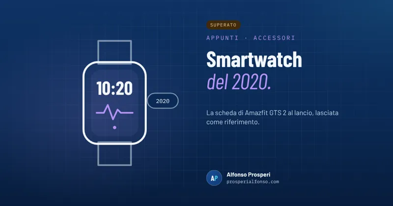
Superato
Accessori · 04 novembre 2020
Amazfit GTS 2: caratteristiche e prezzo al lancio (2020)
La scheda dello smartwatch Amazfit GTS 2 al lancio nel 2020, lasciata come riferimento.
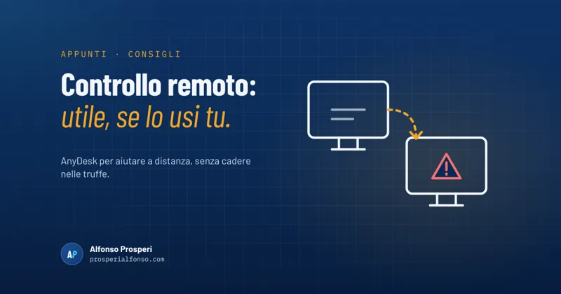
Consigli · 04 novembre 2020
AnyDesk: come funziona il controllo remoto del PC e come evitare le truffe
Aiutare qualcuno a distanza con AnyDesk e riconoscere la truffa del finto operatore.
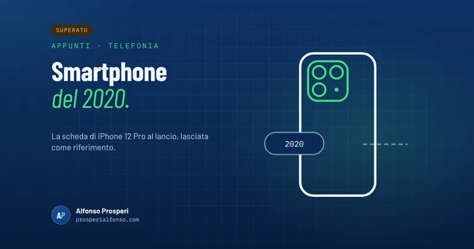
Superato
Telefonia · 03 novembre 2020
iPhone 12 Pro: le caratteristiche al lancio (2020)
La scheda di iPhone 12 Pro al lancio nel 2020, lasciata come riferimento.
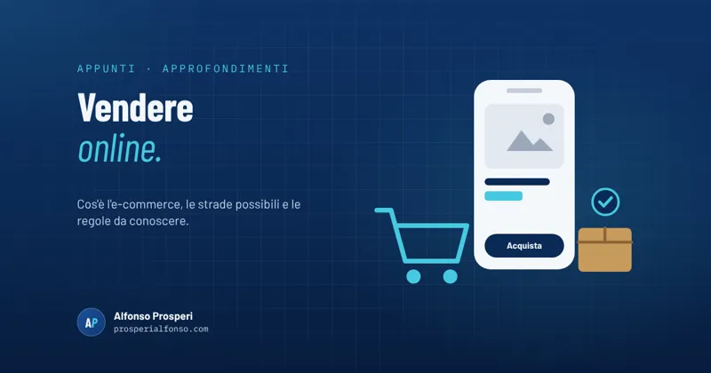
Approfondimenti · 02 novembre 2020
E-commerce: cos'è, come funziona e cosa serve per vendere online in Italia
Negozio proprio o marketplace, piattaforme e regole per vendere online in Italia.
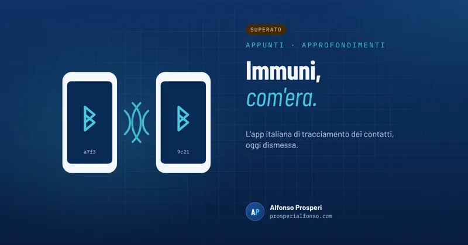
Superato
Approfondimenti · 31 ottobre 2020
Immuni: cos'era l'app italiana contro il Covid (2020, superato)
Cos'era l'app Immuni e come funzionava il tracciamento dei contatti.
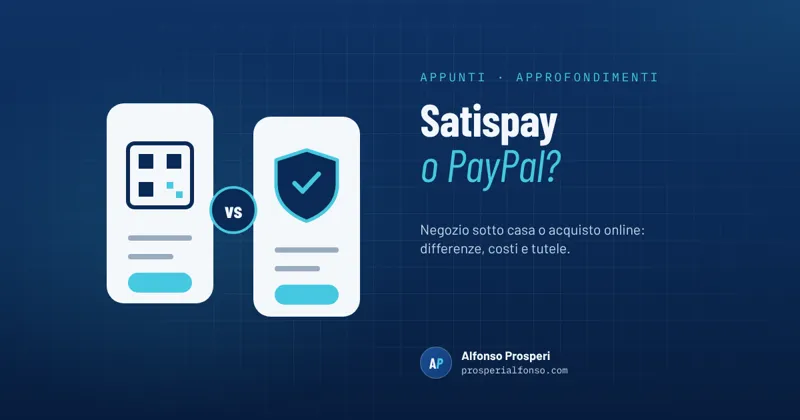
Approfondimenti · 28 ottobre 2020
Satispay o PayPal: differenze, costi e quale scegliere per pagare
Come funzionano, cosa costano e quando conviene usare l'una o l'altra.
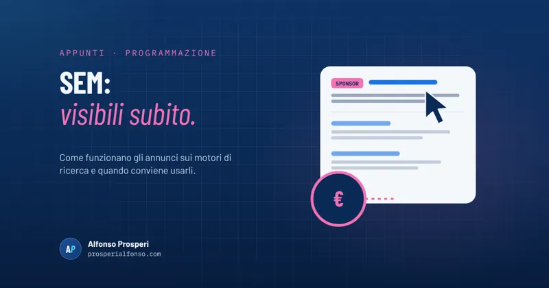
Programmazione · 25 ottobre 2020
SEM: cos'è il marketing sui motori di ricerca e come funzionano gli annunci su Google
SEO, annunci a pagamento e costo per clic: quando conviene la pubblicità su Google.
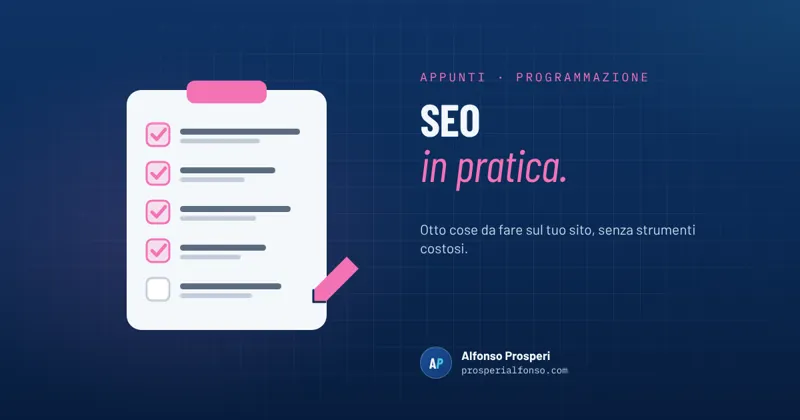
Programmazione · 23 ottobre 2020
SEO in pratica: 8 cose da fare sul tuo sito per farti trovare su Google
Una lista pratica per migliorare la presenza del tuo sito su Google, passo per passo.
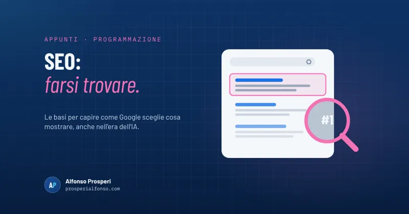
Programmazione · 20 ottobre 2020
SEO: cos'è e come funziona oggi la ricerca su Google, anche con l'IA
Cos'è la SEO, come Google sceglie i risultati e cosa cambia con le risposte dell'IA.
Consigli · 18 ottobre 2020
Email marketing per piccole attività: come iniziare con Brevo (ex Sendinblue)
Newsletter per piccole attività con Brevo (ex Sendinblue): consenso, piano gratuito e consigli.
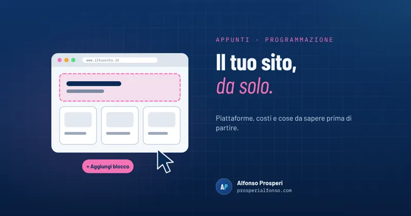
Programmazione · 15 ottobre 2020
Creare un sito internet da soli: piattaforme, costi e cosa serve davvero
Piattaforme, dominio, costi e obblighi: come scegliere la strada giusta per il tuo sito.
Consigli · 11 ottobre 2020
WhatsApp Business: cos'è, come funziona e le funzioni utili per una piccola attività
L'app gratuita per attività: profilo, catalogo, risposte rapide e messaggi automatici.
Consigli · 07 ottobre 2020
Corsi gratuiti di Google: dove trovarli e come imparare competenze digitali
Dove trovare i corsi gratuiti di Google su digitale e intelligenza artificiale e come sceglierli.
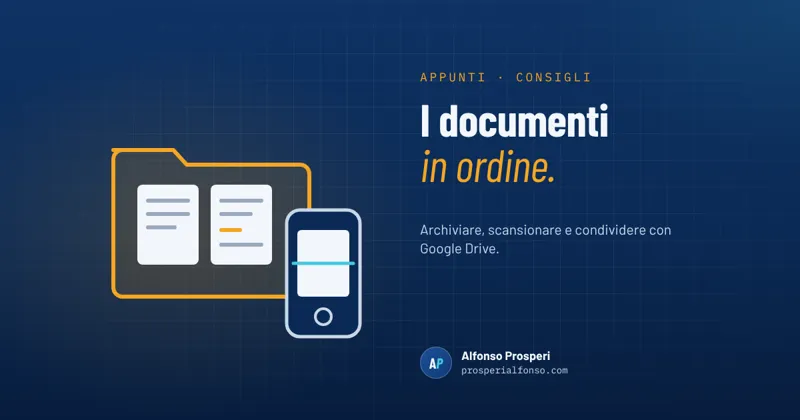
Consigli · 04 ottobre 2020
Google Drive: come archiviare documenti e ricevute online e ritrovarli sempre
Documenti, bollette e ricevute sempre a portata di mano: cartelle, scansioni e condivisione.
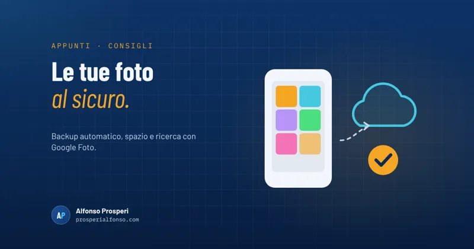
Consigli · 01 ottobre 2020
Google Foto: come fare il backup automatico di foto e video e non perderli più
Backup automatico di foto e video, spazio gratuito, come liberare memoria e ritrovare i ricordi.